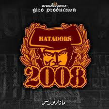

📸 صور المجموعة



العودة للرئيسيةالجيل المتمرد للفيراج الجنوبي
Matadors 2008 هي واحدة من المجموعات الأساسية التي تشكل حركة الألتراس الداعمة للترجي الرياضي التونسي، وتتميز بهويتها البصرية والتنظيمية الخاصة.
التاريخ: تأسست المجموعة في عام 2008.
الموقع: تتخذ المجموعة مقرًا لها في الفيراج (Curva Sud) بالملعب الأولمبي برادس،
وهو المدرج الجنوبي المخصص لمشجعي الترجي.
الفلسفة: نشأت المجموعة كجزء من الجيل الجديد من المشجعين الشباب الذين سعوا
لتبني ثقافة الألتراس الأوروبية واللاتينية في التشجيع، مع التركيز على الاستقلالية التامة عن إدارة النادي.
الاسم (Matadors): يعني "قتلة الثيران"، ويرمز إلى الشجاعة، التحدي،
والشخصية القوية والمواجهة بلا خوف.
الشعارات: تتميز رسوماتهم وGraffiti الخاصة بهم برموز القوة والسيطرة.
التيفوهات: إعداد عروض بصرية ضخمة تغطي مدرجات كاملة برسائل دعم أو تحدي.
الأغاني: أهازيج تحمل أبعادًا اجتماعية وسياسية إلى جانب الدعم الرياضي.
العروض النارية: استخدام الشماريخ والألعاب النارية لخلق أجواء قوية في الفيراج.
المنافسة: منافسة إيجابية مع مجموعات أخرى مثل L’Aggueris لتقديم أفضل دعم.
باختصار، Matadors 2008 هي جيل من المشجعين المنظمين الذين نقلوا ثقافة التشجيع في الترجي إلى مستوى جديد من الاحترافية والولاء المطلق.